Before diving into the mechanics of creating plots, consider why visualization matters. The human visual system excels at detecting patterns, spotting outliers, and perceiving relationships—abilities that summary statistics cannot replace.
Consider Anscombe’s Quartet—four datasets with nearly identical summary statistics (same mean, variance, and correlation) but completely different patterns:
Code
# Reshape Anscombe's built-in datasetanscombe_long <- anscombe |>pivot_longer(everything(),names_to =c(".value", "set"),names_pattern ="(.)(.)")ggplot(anscombe_long, aes(x = x, y = y)) +geom_point(size =2, color ="steelblue") +geom_smooth(method ="lm", se =FALSE, color ="coral") +facet_wrap(~set, ncol =2) +labs(title ="Same Mean, Variance, and Correlation—Different Stories") +theme_minimal()
Figure 10.1: Anscombe’s Quartet: Four datasets with identical summary statistics but very different patterns
All four datasets have nearly identical statistical summaries, yet they represent fundamentally different phenomena: a linear relationship, a curved relationship, an outlier-driven relationship, and a vertical cluster with one outlier. Summary statistics alone would suggest these datasets are equivalent—only visualization reveals the truth.
Always Visualize Your Data
Never trust summary statistics alone. Before running statistical tests, visualize your data to check assumptions, identify outliers, and understand the underlying patterns.
10.2 Choosing the Right Chart Type
Different questions call for different visualizations. Matching your question to the right chart type is the first step toward effective communication:
Question
Chart Type
Why
How are values distributed?
Histogram, density plot
Shows shape, center, spread
How do groups compare?
Box plot, bar chart
Side-by-side comparison
How do two variables relate?
Scatter plot
Shows correlation, patterns
How does a value change over time?
Line plot
Connects sequential observations
What is the composition?
Stacked bar chart
Shows parts of a whole
Start with the Question
Before creating any visualization, ask yourself: “What question am I trying to answer?” The chart type should emerge from the question, not the other way around.
10.3 The Grammar of Graphics
Data visualization is both an art and a science. A well-designed graphic can reveal patterns, communicate findings, and guide analysis in ways that tables of numbers cannot. The ggplot2 package implements a coherent system for creating graphics based on Leland Wilkinson’s “Grammar of Graphics”—a framework that describes the fundamental components from which all statistical graphics can be built.
Just as grammar provides rules for constructing sentences from words, the grammar of graphics provides rules for constructing visualizations from components. Every graphic is composed of data, aesthetic mappings that connect variables to visual properties, and geometric objects that represent data points. Additional components like scales, statistical transformations, coordinate systems, and facets allow for sophisticated customizations.
Figure 10.2: The grammar of graphics breaks visualizations into fundamental components
10.4 Building Plots with ggplot2
The basic structure of a ggplot2 call begins with the ggplot() function, which creates a coordinate system. You add layers to this foundation using the + operator.
Figure 10.3: A basic scatterplot of highway fuel efficiency versus engine displacement
This creates a scatterplot of highway fuel efficiency against engine displacement using the built-in mpg dataset. The aes() function establishes the aesthetic mapping—which variables map to which visual properties. Here, displ maps to the x-axis and hwy to the y-axis. The geom_point() function adds a layer of points.
10.5 Aesthetic Mappings
Aesthetics are visual properties of the plot. Beyond position (x and y), common aesthetics include color, size, shape, and transparency (alpha). You can map variables to these aesthetics to encode additional information.
Code
ggplot(mpg, aes(x = displ, y = hwy, color = class)) +geom_point(size =3, alpha =0.7)
Figure 10.4: Scatterplot with color mapped to vehicle class
Now the color of each point indicates the vehicle class. The legend is created automatically. Note that aesthetics defined inside aes() are mapped to variables, while those defined outside (like size = 3) apply uniformly to all points.
10.6 Geometric Objects
Geometric objects, or geoms, determine what type of plot you create. Different geoms represent data in different ways.
Scatterplots with geom_point()
Points are good for showing the relationship between two continuous variables:
Code
ggplot(mpg, aes(x = displ, y = hwy)) +geom_point()
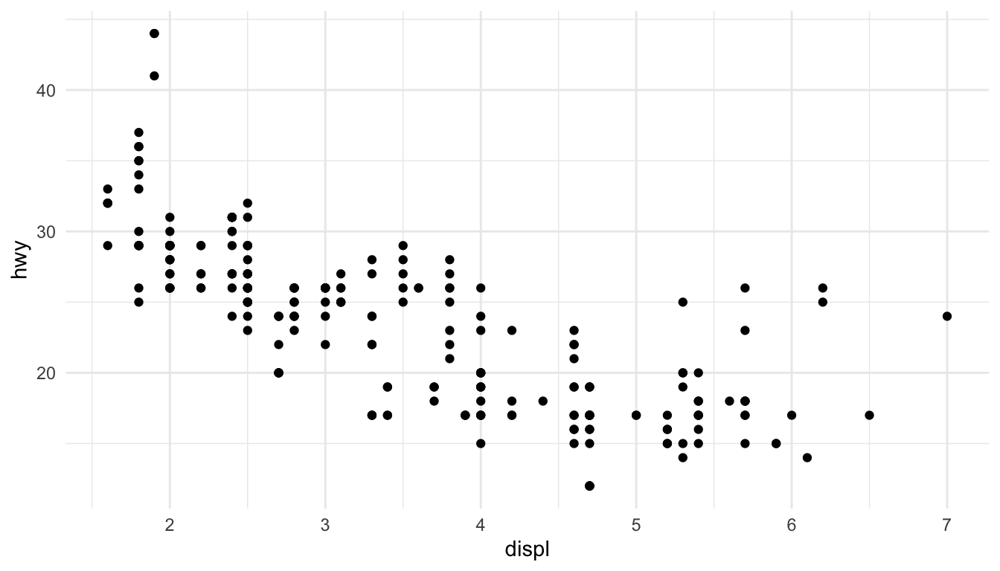
Figure 10.5: Simple scatterplot using geom_point()
Line Plots with geom_line() and geom_smooth()
Lines connect points in order, useful for time series or showing trends:
Code
ggplot(mpg, aes(x = displ, y = hwy)) +geom_point() +geom_smooth()
Figure 10.6: Scatterplot with smoothed trend line and confidence interval
The geom_smooth() function adds a smoothed conditional mean with confidence interval.
Bar Charts with geom_bar()
Bar charts show counts or summaries of categorical data:
Code
ggplot(diamonds, aes(x = cut)) +geom_bar()
Figure 10.7: Bar chart showing diamond counts by cut quality
Use fill to color bars by another variable:
Code
ggplot(diamonds, aes(x = cut, fill = clarity)) +geom_bar(position ="dodge")
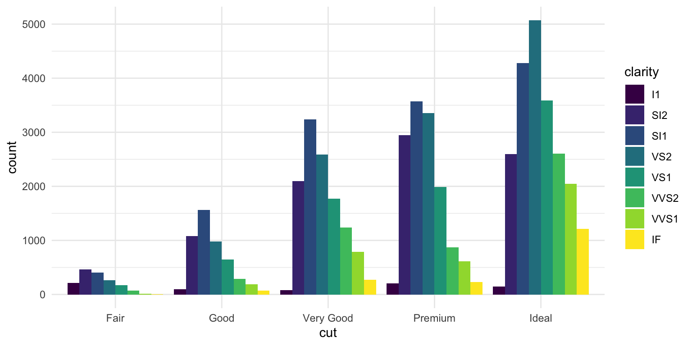
Figure 10.8: Grouped bar chart showing diamond counts by cut and clarity
Histograms with geom_histogram()
Histograms show the distribution of a continuous variable:
Code
ggplot(diamonds, aes(x = carat)) +geom_histogram(binwidth =0.1, fill ="steelblue", color ="white")
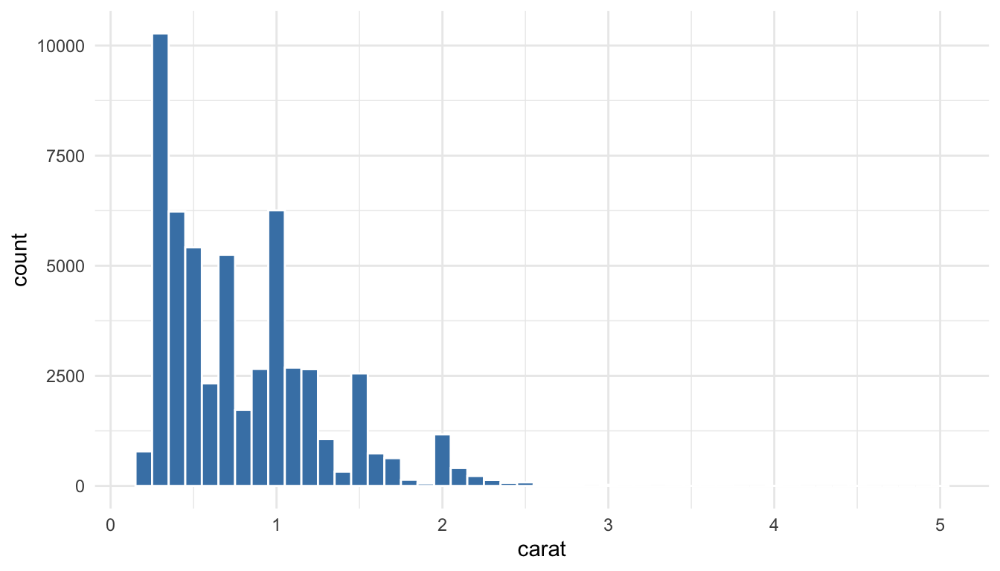
Figure 10.9: Histogram showing the distribution of diamond carat weights
Boxplots with geom_boxplot()
Boxplots summarize distributions and highlight outliers:
Code
ggplot(mpg, aes(x = class, y = hwy)) +geom_boxplot()
Figure 10.10: Boxplot comparing highway fuel efficiency across vehicle classes
10.7 Combining Multiple Geoms
You can layer multiple geoms to create richer visualizations:
Code
ggplot(mpg, aes(x = displ, y = hwy)) +geom_point(aes(color = class)) +geom_smooth(se =FALSE, color ="black")
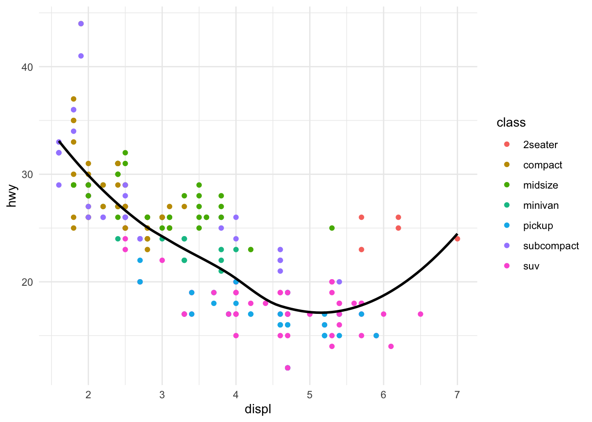
Figure 10.11: Combining multiple geoms: points colored by class with a black trend line
10.8 Faceting
Faceting creates small multiples—separate panels for subsets of the data. This is powerful for comparing patterns across groups.
Figure 10.13: Two-variable faceting by drive type (rows) and number of cylinders (columns)
10.9 Labels and Titles
Add informative labels with the labs() function:
Code
ggplot(mpg, aes(x = displ, y = hwy, color = class)) +geom_point() +geom_smooth(se =FALSE) +labs(title ="Fuel Efficiency Decreases with Engine Size",subtitle ="Data from EPA fuel economy tests",caption ="Source: fueleconomy.gov",x ="Engine Displacement (liters)",y ="Highway Fuel Efficiency (mpg)",color ="Vehicle Class" )
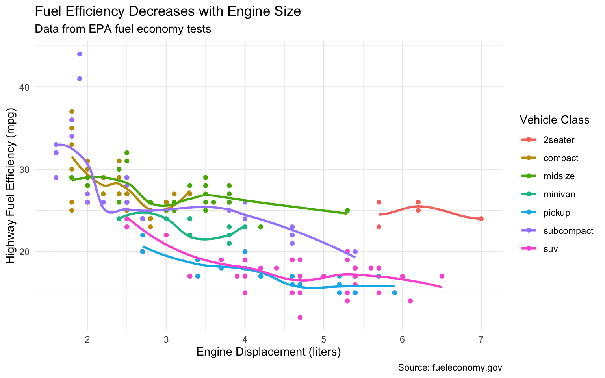
Figure 10.14: A well-labeled plot with title, subtitle, caption, and axis labels
10.10 Themes
Themes control the non-data aspects of the plot—background, grid lines, fonts, etc. ggplot2 includes several built-in themes:
Code
ggplot(mpg, aes(x = displ, y = hwy)) +geom_point() +theme_classic()
Figure 10.15: Using theme_classic() for a clean, publication-ready appearance
Other built-in themes include theme_minimal(), theme_bw(), theme_light(), and theme_dark(). The ggthemes package provides many additional themes.
10.11 Choosing the Right Plot
Choosing an appropriate visualization depends on the types of variables you want to display and the message you want to convey.
Figure 10.16: Choosing the right visualization depends on your data types and question
For one categorical variable, use bar charts. For one continuous variable, use histograms or density plots. For two continuous variables, use scatterplots. For one continuous and one categorical, use boxplots or violin plots. For two categorical variables, use stacked or grouped bar charts or heat maps.
10.12 Principles of Effective Visualization
Edward Tufte articulated principles of graphical excellence that remain influential: “Graphical excellence is that which gives to the viewer the greatest number of ideas in the shortest time with the least ink in the smallest space.”
Key principles include:
Show the data. Above all else, make the data visible. Avoid chart junk that obscures what you are trying to communicate.
Encourage comparison. Design graphics to facilitate comparison of different groups or conditions.
Represent magnitudes honestly. The visual representation should be proportional to the numerical quantities being represented. Avoid truncated axes that exaggerate differences.
Minimize clutter. Remove unnecessary grid lines, borders, and decorations. Every element should serve a purpose.
Make displays easy to interpret. Use clear labels, appropriate colors, and logical organization.
Order Categories Meaningfully
By default, R orders categorical variables alphabetically, which is rarely the most informative arrangement. Use reorder() to order categories by a meaningful value:
Code
# Create sample datasample_data <-tibble(treatment =c("Control", "Low Dose", "Medium Dose", "High Dose"),response =c(12, 18, 25, 31))# Default alphabetical order (not ideal)ggplot(sample_data, aes(x = treatment, y = response)) +geom_col(fill ="steelblue") +labs(title ="Default Order (Alphabetical)",x ="Treatment", y ="Response") +theme_minimal()
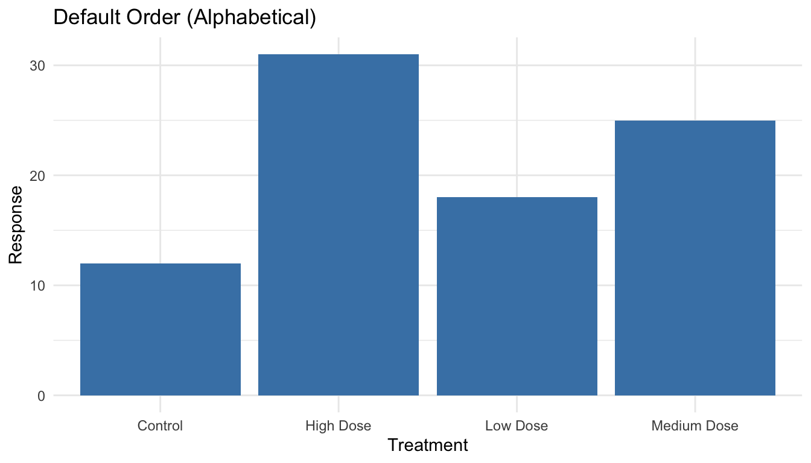
Figure 10.17: Bar chart with default alphabetical ordering (often not ideal)
Code
# Order by response value (more meaningful)sample_data |>mutate(treatment =reorder(treatment, response)) |>ggplot(aes(x = treatment, y = response)) +geom_col(fill ="steelblue") +labs(title ="Ordered by Value (More Meaningful)",x ="Treatment", y ="Response") +theme_minimal()
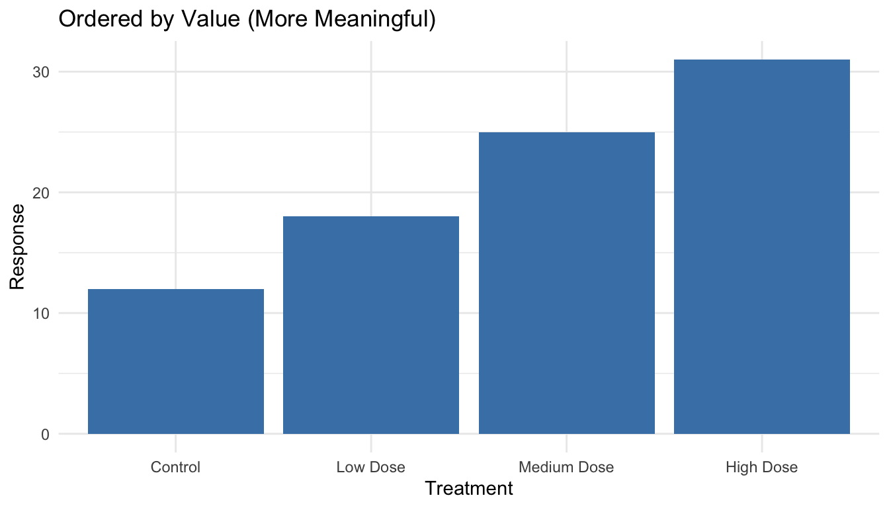
Figure 10.18: Bar chart with categories ordered by value for easier comparison
The reorder() function takes a categorical variable and a numeric variable, reordering the categories by the numeric values. For horizontal bar charts (which are often easier to read), add coord_flip():
Code
sample_data |>mutate(treatment =reorder(treatment, response)) |>ggplot(aes(x = treatment, y = response)) +geom_col(fill ="steelblue") +coord_flip() +labs(title ="Horizontal Bars (Good for Long Labels)",x =NULL, y ="Response") +theme_minimal()
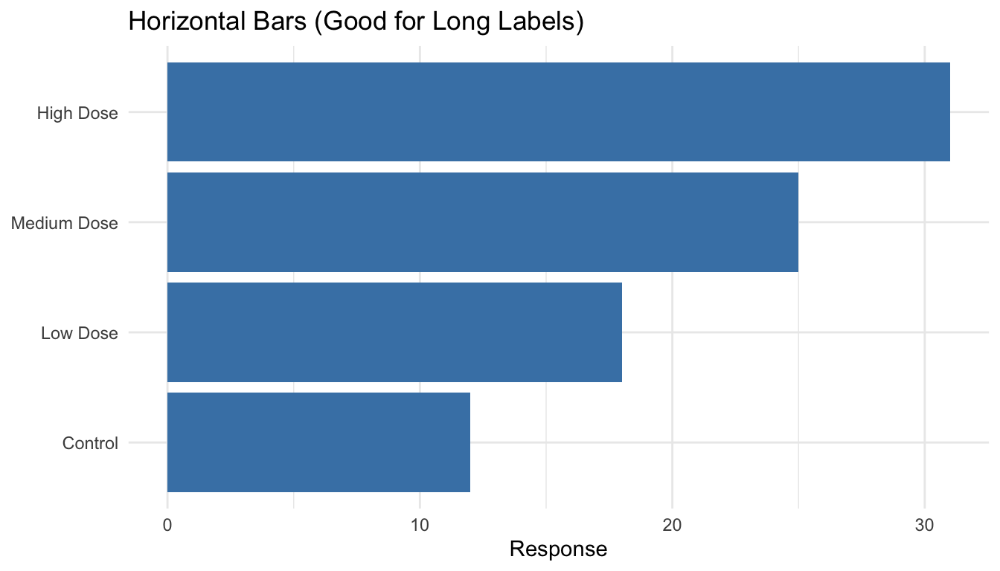
Figure 10.19: Horizontal bar chart with coord_flip() for easier reading of long labels
10.13 Visual Encoding: How We Perceive Data
Effective visualization depends on understanding how humans perceive visual information. We encode data using visual cues—properties like position, length, color, and shape. But not all visual cues are equally effective.
The Hierarchy of Visual Encoding
Research by Cleveland and McGill established that we perceive some visual encodings more accurately than others. From most to least accurate:
Position along a common scale (scatterplots, dot plots)
Position along non-aligned scales (small multiples)
Length (bar charts)
Angle/slope (some line charts)
Area (bubble charts, treemaps)
Volume (3D charts—generally avoid)
Color saturation/hue (choropleth maps, heatmaps)
This hierarchy explains why bar charts work better than pie charts for comparing quantities—we judge lengths more accurately than angles or areas.
Position Is Most Powerful
When possible, encode your most important data using position. Scatterplots, line graphs, and dot plots all use position effectively:
Code
# Compare a pie chart vs. bar chart for the same datalibrary(patchwork)category_data <-data.frame(category =c("Engineering", "Medicine", "Natural Sciences", "Social Sciences"),funding =c(35, 28, 22, 15))# Bar chart - easy to comparep_bar <-ggplot(category_data, aes(x =reorder(category, funding), y = funding)) +geom_col(fill ="steelblue") +coord_flip() +labs(title ="Bar Chart: Easy Comparison", x ="", y ="Funding (%)") +theme_minimal()# Pie chart - harder to comparep_pie <-ggplot(category_data, aes(x ="", y = funding, fill = category)) +geom_col(width =1) +coord_polar("y") +labs(title ="Pie Chart: Harder to Compare", fill ="Category") +theme_void() +theme(legend.position ="bottom")p_bar + p_pie
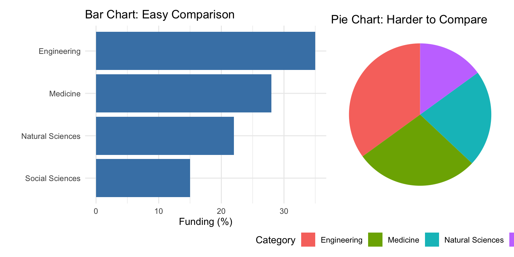
Figure 10.20: Comparing bar charts and pie charts: position-based encoding is easier to judge than angles
The bar chart makes it immediately obvious that Engineering has the most funding. With the pie chart, you must work harder to compare the slice sizes.
10.14 When Should Zero Be Included?
A contentious issue in data visualization is whether the y-axis should always start at zero. The answer depends on the type of chart and what you’re trying to show.
Bar Charts: Always Include Zero
For bar charts, the length of the bar represents the magnitude of the value. If the axis doesn’t start at zero, the visual representation misrepresents the data:
Code
# Demonstration of misleading truncated axisgdp_data <-data.frame(country =c("A", "B", "C"),gdp =c(45000, 47000, 49000))p_trunc <-ggplot(gdp_data, aes(x = country, y = gdp)) +geom_col(fill ="steelblue") +coord_cartesian(ylim =c(44000, 50000)) +labs(title ="Truncated Axis: Misleading",subtitle ="Differences appear huge",y ="GDP per capita") +theme_minimal()p_full <-ggplot(gdp_data, aes(x = country, y = gdp)) +geom_col(fill ="steelblue") +labs(title ="Full Axis: Honest",subtitle ="Differences in proper context",y ="GDP per capita") +theme_minimal()p_trunc + p_full
Figure 10.21: Truncated axes in bar charts can mislead readers about the magnitude of differences
Scatterplots and Line Charts: Context Matters
For position-based encodings like scatterplots and line charts, zero doesn’t need to be included if it would waste space and obscure meaningful variation:
Code
# Temperature data - zero would be meaninglessset.seed(42)temp_data <-data.frame(day =1:30,temp =rnorm(30, mean =72, sd =5))p_zero <-ggplot(temp_data, aes(x = day, y = temp)) +geom_line(color ="firebrick") +ylim(0, 100) +labs(title ="Including Zero: Wastes Space", y ="Temperature (°F)") +theme_minimal()p_auto <-ggplot(temp_data, aes(x = day, y = temp)) +geom_line(color ="firebrick") +labs(title ="Natural Range: Shows Variation", y ="Temperature (°F)") +theme_minimal()p_zero + p_auto
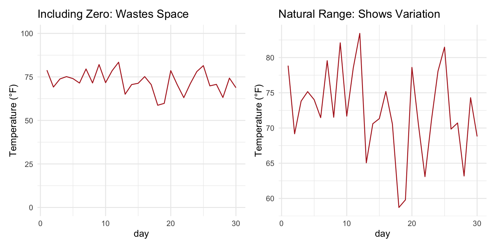
Figure 10.22: For line charts, including zero depends on whether it has meaning for the variable
The key question is: what would zero mean for this variable? For temperature in Fahrenheit, zero has no special significance for daily weather data. For proportions or counts, zero is meaningful and often should be included.
The Zero Rule
Bar charts: Always include zero—the bar length represents magnitude. Line charts and scatterplots: Include zero if it’s meaningful; otherwise, show the natural range of the data. When in doubt: Ask whether excluding zero could mislead readers about the magnitude of differences.
10.15 Data Transformations for Visualization
Sometimes the raw data doesn’t visualize well. Transformations can reveal patterns that are hidden in the original scale.
Log Transformations for Skewed Data
Many biological variables—gene expression, population sizes, concentrations—follow approximately log-normal distributions with long right tails. Log transformation can make patterns visible:
Code
# Simulated gene expression dataset.seed(123)expression_data <-data.frame(gene_a =rlnorm(200, meanlog =2, sdlog =1.5),gene_b =rlnorm(200, meanlog =3, sdlog =1.2))p_raw <-ggplot(expression_data, aes(x = gene_a, y = gene_b)) +geom_point(alpha =0.5) +labs(title ="Original Scale",subtitle ="Pattern obscured by outliers",x ="Gene A Expression", y ="Gene B Expression") +theme_minimal()p_log <-ggplot(expression_data, aes(x = gene_a, y = gene_b)) +geom_point(alpha =0.5) +scale_x_log10() +scale_y_log10() +labs(title ="Log Scale",subtitle ="Relationship visible",x ="Gene A Expression (log)", y ="Gene B Expression (log)") +theme_minimal()p_raw + p_log
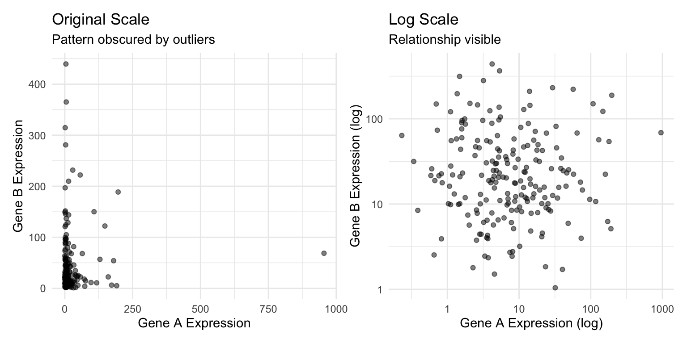
Figure 10.23: Log transformation reveals patterns in skewed data that span multiple orders of magnitude
When to Use Log Scales
Consider log transformation when:
Data span several orders of magnitude
Relationships are multiplicative rather than additive
Distribution is strongly right-skewed
You’re comparing fold changes or ratios
Be sure to label axes clearly when using transformed scales, and remember that zero cannot be log-transformed.
10.16 Color in Data Visualization
Color is a powerful but often misused encoding. Effective use of color requires understanding perception and accessibility.
Types of Color Scales
Sequential: For ordered data from low to high. Use a single hue varying in lightness.
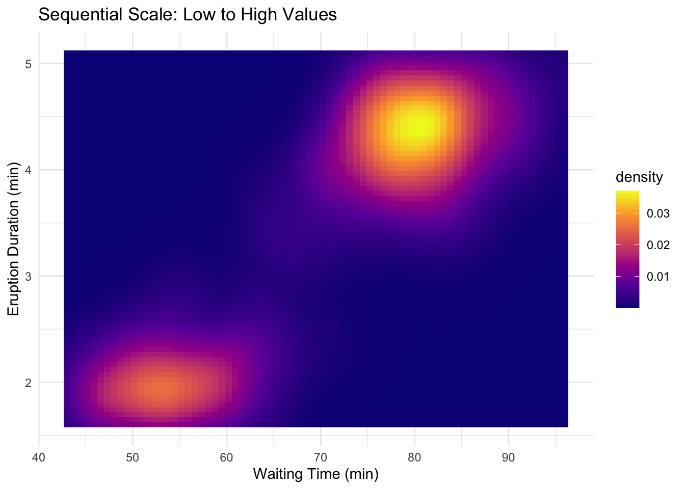
Diverging: For data with a meaningful midpoint. Two hues diverge from a neutral center.
Qualitative: For categorical data with no inherent order. Use distinct hues.
Color Accessibility
Approximately 8% of men and 0.5% of women have some form of color vision deficiency. Design for accessibility:
Avoid red-green as the only distinguishing feature
Use the viridis color scales, designed for perceptual uniformity and colorblind accessibility
Supplement color with shape or pattern when possible
Code
# Good practice: color + shapeggplot(mpg, aes(x = displ, y = hwy, color = drv, shape = drv)) +geom_point(size =3) +scale_color_viridis_d() +labs(title ="Color + Shape: Accessible Design",x ="Engine Displacement (L)", y ="Highway MPG",color ="Drive Type", shape ="Drive Type") +theme_minimal()
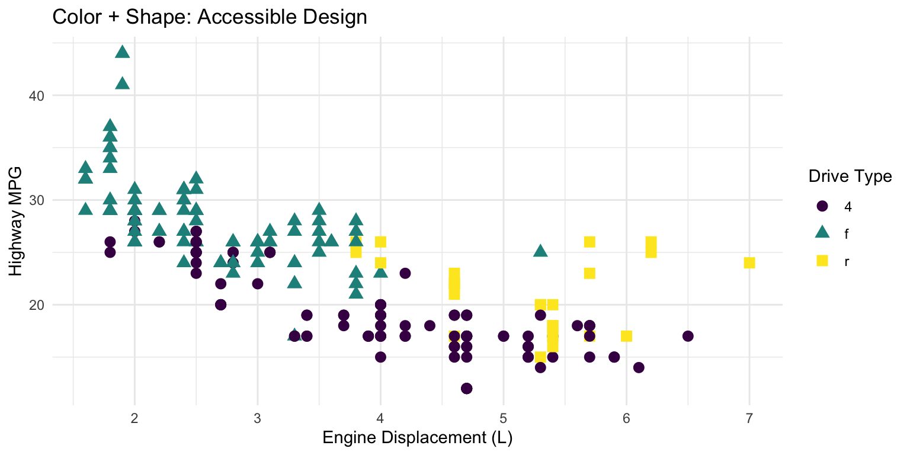
Figure 10.24: Using both color and shape ensures accessibility for colorblind viewers
Avoid Rainbow Color Scales
Rainbow color scales (like the default “jet” colormap in MATLAB) have serious problems:
They’re not perceptually uniform—yellow appears brighter than blue
They create false boundaries where colors change dramatically
They’re particularly problematic for colorblind viewers
Use viridis, plasma, or other perceptually uniform scales instead.
10.17 The Power of Small Multiples
Small multiples—the same chart repeated for different subsets of the data—are remarkably effective for comparison. Edward Tufte called them “the best design solution for a wide range of problems in data presentation.”
Code
# Small multiples exampleggplot(gapminder::gapminder %>%filter(continent !="Oceania"),aes(x = gdpPercap, y = lifeExp)) +geom_point(alpha =0.3, size =0.8) +geom_smooth(method ="loess", se =FALSE, color ="firebrick") +scale_x_log10(labels = scales::comma) +facet_grid(continent ~cut(year, breaks =c(1950, 1970, 1990, 2010),labels =c("1952-1970", "1971-1990", "1991-2007"))) +labs(title ="Life Expectancy vs. GDP Over Time by Continent",x ="GDP per Capita (log scale)",y ="Life Expectancy (years)") +theme_minimal() +theme(strip.text =element_text(size =9))
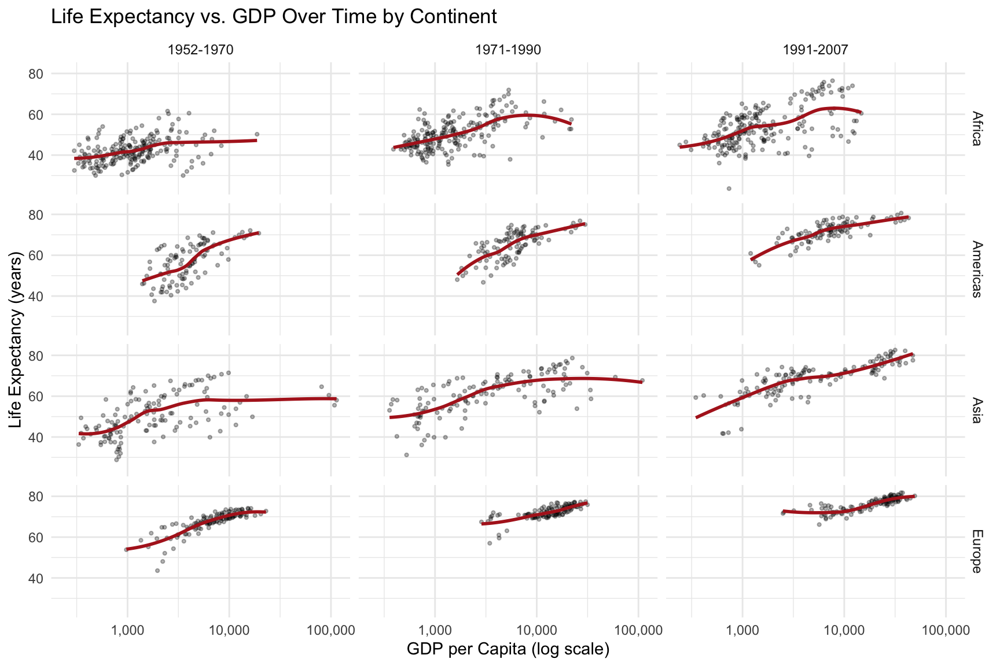
Figure 10.25: Small multiples allow easy comparison of patterns across groups and time periods
Small multiples work because:
The eye can quickly scan and compare panels
Each panel has identical axes, making comparison fair
Patterns and outliers become visible through repetition
10.18 Common Visualization Mistakes
Beyond the principles discussed, watch out for these common errors:
Overplotting: Too many points obscure patterns. Use transparency, jittering, or density plots.
Figure 10.26: Using transparency (alpha) to reveal density when many points overlap
Dual y-axes: These are almost always misleading. The relationship between the two scales is arbitrary and can be manipulated to show any desired pattern.
3D effects: Three-dimensional bar charts, pie charts, and similar decorations distort perception without adding information. Avoid them.
Excessive decoration: Gridlines, borders, backgrounds, and other “chart junk” should be minimized. Focus attention on the data.
10.19 Examples of Poor Graphics
Recognizing bad graphics helps you avoid making them.
Figure 10.27: Examples of poor graphic design that obscure rather than reveal patterns
Ticker-tape style displays make it hard to see patterns. Lines connecting unrelated points mislead. Pie charts make comparisons difficult because humans are poor at judging angles. Three-dimensional effects distort perception without adding information.
Figure 10.28: Pie charts and 3D effects make comparisons difficult and distort perception
10.20 A Famous Good Example
Charles Minard’s 1869 map of Napoleon’s Russian campaign is often cited as one of the best statistical graphics ever made. It displays six variables: the size of the army, its location (latitude and longitude), direction of movement, temperature, and date—all in a single coherent image.
Figure 10.29: Minard’s 1869 map of Napoleon’s Russian campaign displays six variables in a single coherent image
The graphic tells a story. You can see the army shrink as it advances, the devastating losses during the retreat, and the correlation with plummeting temperatures. No legend is needed; the meaning is immediately apparent.
10.21 Saving Plots
Save plots with ggsave():
Code
# Create and save a plotp <-ggplot(mpg, aes(x = displ, y = hwy)) +geom_point()ggsave("my_plot.png", p, width =8, height =6, dpi =300)ggsave("my_plot.pdf", p, width =8, height =6)
The function infers the format from the file extension. Specify dimensions and resolution for publication-quality output.
10.22 Practice Exercises
The best way to learn ggplot2 is to use it. Take a dataset you care about and try different visualizations. Experiment with aesthetics, geoms, and facets. Read error messages carefully—they often point directly to the problem.
Exercise V.1: Basic ggplot2
Create your first ggplot visualizations:
Code
library(ggplot2)data(mpg)# Basic scatterplotggplot(mpg, aes(x = displ, y = hwy)) +geom_point()
Create a scatterplot of engine displacement vs. highway mpg
Add color based on vehicle class
Add appropriate axis labels and a title
Try different themes (theme_minimal(), theme_classic(), theme_bw())
Exercise V.2: Geometric Objects
Practice with different geoms:
Create a histogram of highway mpg using geom_histogram()
Create a boxplot of highway mpg by vehicle class using geom_boxplot()
Create a bar chart showing the count of vehicles by manufacturer using geom_bar()
Create a line plot (use a time series dataset or create synthetic data)
Exercise V.3: Aesthetic Mappings
Explore different aesthetic mappings:
Map a continuous variable to color in a scatterplot
Map a categorical variable to shape
Set fixed aesthetics (like size = 3) outside of aes()
What is the difference between mapping a variable to an aesthetic inside aes() versus setting a fixed value outside?
Code
# Mapped aesthetic (variable determines color)ggplot(mpg, aes(x = displ, y = hwy, color = class)) +geom_point(size =3)# Fixed aesthetic (all points same color)ggplot(mpg, aes(x = displ, y = hwy)) +geom_point(color ="steelblue", size =3)
Exercise V.4: Faceting
Practice creating small multiples:
Create a scatterplot faceted by vehicle class using facet_wrap()
Create a grid of plots using facet_grid() with two variables
Experiment with the scales argument to allow different axis scales per facet
Save the figure using ggsave() with appropriate dimensions and resolution
Source Code
# Data Visualization {#sec-visualization}```{r}#| echo: false#| message: falselibrary(tidyverse)theme_set(theme_minimal())```## Why Visualize Data?Before diving into the mechanics of creating plots, consider why visualization matters. The human visual system excels at detecting patterns, spotting outliers, and perceiving relationships—abilities that summary statistics cannot replace.Consider **Anscombe's Quartet**—four datasets with nearly identical summary statistics (same mean, variance, and correlation) but completely different patterns:```{r}#| label: fig-anscombes#| fig-cap: "Anscombe's Quartet: Four datasets with identical summary statistics but very different patterns"#| fig-height: 5#| fig-width: 8# Reshape Anscombe's built-in datasetanscombe_long <- anscombe |>pivot_longer(everything(),names_to =c(".value", "set"),names_pattern ="(.)(.)")ggplot(anscombe_long, aes(x = x, y = y)) +geom_point(size =2, color ="steelblue") +geom_smooth(method ="lm", se =FALSE, color ="coral") +facet_wrap(~set, ncol =2) +labs(title ="Same Mean, Variance, and Correlation—Different Stories") +theme_minimal()```All four datasets have nearly identical statistical summaries, yet they represent fundamentally different phenomena: a linear relationship, a curved relationship, an outlier-driven relationship, and a vertical cluster with one outlier. Summary statistics alone would suggest these datasets are equivalent—only visualization reveals the truth.::: {.callout-important}## Always Visualize Your DataNever trust summary statistics alone. Before running statistical tests, visualize your data to check assumptions, identify outliers, and understand the underlying patterns.:::## Choosing the Right Chart TypeDifferent questions call for different visualizations. Matching your question to the right chart type is the first step toward effective communication:| Question | Chart Type | Why ||:---------|:-----------|:----|| How are values distributed? | Histogram, density plot | Shows shape, center, spread || How do groups compare? | Box plot, bar chart | Side-by-side comparison || How do two variables relate? | Scatter plot | Shows correlation, patterns || How does a value change over time? | Line plot | Connects sequential observations || What is the composition? | Stacked bar chart | Shows parts of a whole |::: {.callout-tip}## Start with the QuestionBefore creating any visualization, ask yourself: "What question am I trying to answer?" The chart type should emerge from the question, not the other way around.:::## The Grammar of GraphicsData visualization is both an art and a science. A well-designed graphic can reveal patterns, communicate findings, and guide analysis in ways that tables of numbers cannot. The `ggplot2` package implements a coherent system for creating graphics based on Leland Wilkinson's "Grammar of Graphics"—a framework that describes the fundamental components from which all statistical graphics can be built.Just as grammar provides rules for constructing sentences from words, the grammar of graphics provides rules for constructing visualizations from components. Every graphic is composed of data, aesthetic mappings that connect variables to visual properties, and geometric objects that represent data points. Additional components like scales, statistical transformations, coordinate systems, and facets allow for sophisticated customizations.{#fig-grammar-graphics fig-align="center"}## Building Plots with ggplot2The basic structure of a ggplot2 call begins with the `ggplot()` function, which creates a coordinate system. You add layers to this foundation using the `+` operator.```{r}#| label: fig-basic-ggplot#| fig-cap: "A basic scatterplot of highway fuel efficiency versus engine displacement"#| fig-width: 7#| fig-height: 5ggplot(data = mpg, mapping =aes(x = displ, y = hwy)) +geom_point()```This creates a scatterplot of highway fuel efficiency against engine displacement using the built-in `mpg` dataset. The `aes()` function establishes the aesthetic mapping—which variables map to which visual properties. Here, `displ` maps to the x-axis and `hwy` to the y-axis. The `geom_point()` function adds a layer of points.## Aesthetic MappingsAesthetics are visual properties of the plot. Beyond position (x and y), common aesthetics include color, size, shape, and transparency (alpha). You can map variables to these aesthetics to encode additional information.```{r}#| label: fig-aesthetic-mapping#| fig-cap: "Scatterplot with color mapped to vehicle class"#| fig-width: 8#| fig-height: 5ggplot(mpg, aes(x = displ, y = hwy, color = class)) +geom_point(size =3, alpha =0.7)```Now the color of each point indicates the vehicle class. The legend is created automatically. Note that aesthetics defined inside `aes()` are mapped to variables, while those defined outside (like `size = 3`) apply uniformly to all points.## Geometric ObjectsGeometric objects, or geoms, determine what type of plot you create. Different geoms represent data in different ways.### Scatterplots with geom_point()Points are good for showing the relationship between two continuous variables:```{r}#| label: fig-geom-point#| fig-cap: "Simple scatterplot using geom_point()"#| fig-width: 7#| fig-height: 4ggplot(mpg, aes(x = displ, y = hwy)) +geom_point()```### Line Plots with geom_line() and geom_smooth()Lines connect points in order, useful for time series or showing trends:```{r}#| label: fig-geom-smooth#| fig-cap: "Scatterplot with smoothed trend line and confidence interval"#| fig-width: 7#| fig-height: 4ggplot(mpg, aes(x = displ, y = hwy)) +geom_point() +geom_smooth()```The `geom_smooth()` function adds a smoothed conditional mean with confidence interval.### Bar Charts with geom_bar()Bar charts show counts or summaries of categorical data:```{r}#| label: fig-geom-bar#| fig-cap: "Bar chart showing diamond counts by cut quality"#| fig-width: 7#| fig-height: 4ggplot(diamonds, aes(x = cut)) +geom_bar()```Use `fill` to color bars by another variable:```{r}#| label: fig-bar-dodge#| fig-cap: "Grouped bar chart showing diamond counts by cut and clarity"#| fig-width: 8#| fig-height: 4ggplot(diamonds, aes(x = cut, fill = clarity)) +geom_bar(position ="dodge")```### Histograms with geom_histogram()Histograms show the distribution of a continuous variable:```{r}#| label: fig-histogram#| fig-cap: "Histogram showing the distribution of diamond carat weights"#| fig-width: 7#| fig-height: 4ggplot(diamonds, aes(x = carat)) +geom_histogram(binwidth =0.1, fill ="steelblue", color ="white")```### Boxplots with geom_boxplot()Boxplots summarize distributions and highlight outliers:```{r}#| label: fig-boxplot#| fig-cap: "Boxplot comparing highway fuel efficiency across vehicle classes"#| fig-width: 8#| fig-height: 4ggplot(mpg, aes(x = class, y = hwy)) +geom_boxplot()```## Combining Multiple GeomsYou can layer multiple geoms to create richer visualizations:```{r}#| label: fig-combined-geoms#| fig-cap: "Combining multiple geoms: points colored by class with a black trend line"#| fig-width: 7#| fig-height: 5ggplot(mpg, aes(x = displ, y = hwy)) +geom_point(aes(color = class)) +geom_smooth(se =FALSE, color ="black")```## FacetingFaceting creates small multiples—separate panels for subsets of the data. This is powerful for comparing patterns across groups.```{r}#| label: fig-facet-wrap#| fig-cap: "Small multiples showing the displacement-efficiency relationship for each vehicle class"#| fig-width: 9#| fig-height: 6ggplot(mpg, aes(x = displ, y = hwy)) +geom_point() +facet_wrap(~ class, nrow =2)```Use `facet_grid()` for two-variable faceting:```{r}#| label: fig-facet-grid#| fig-cap: "Two-variable faceting by drive type (rows) and number of cylinders (columns)"#| fig-width: 9#| fig-height: 6ggplot(mpg, aes(x = displ, y = hwy)) +geom_point() +facet_grid(drv ~ cyl)```## Labels and TitlesAdd informative labels with the `labs()` function:```{r}#| label: fig-labs-demo#| fig-cap: "A well-labeled plot with title, subtitle, caption, and axis labels"#| fig-width: 8#| fig-height: 5ggplot(mpg, aes(x = displ, y = hwy, color = class)) +geom_point() +geom_smooth(se =FALSE) +labs(title ="Fuel Efficiency Decreases with Engine Size",subtitle ="Data from EPA fuel economy tests",caption ="Source: fueleconomy.gov",x ="Engine Displacement (liters)",y ="Highway Fuel Efficiency (mpg)",color ="Vehicle Class" )```## ThemesThemes control the non-data aspects of the plot—background, grid lines, fonts, etc. ggplot2 includes several built-in themes:```{r}#| label: fig-theme-classic#| fig-cap: "Using theme_classic() for a clean, publication-ready appearance"#| fig-width: 7#| fig-height: 4ggplot(mpg, aes(x = displ, y = hwy)) +geom_point() +theme_classic()```Other built-in themes include `theme_minimal()`, `theme_bw()`, `theme_light()`, and `theme_dark()`. The `ggthemes` package provides many additional themes.## Choosing the Right PlotChoosing an appropriate visualization depends on the types of variables you want to display and the message you want to convey.{#fig-chart-selection fig-align="center"}For one categorical variable, use bar charts. For one continuous variable, use histograms or density plots. For two continuous variables, use scatterplots. For one continuous and one categorical, use boxplots or violin plots. For two categorical variables, use stacked or grouped bar charts or heat maps.## Principles of Effective VisualizationEdward Tufte articulated principles of graphical excellence that remain influential: "Graphical excellence is that which gives to the viewer the greatest number of ideas in the shortest time with the least ink in the smallest space."Key principles include:**Show the data.** Above all else, make the data visible. Avoid chart junk that obscures what you are trying to communicate.**Encourage comparison.** Design graphics to facilitate comparison of different groups or conditions.**Represent magnitudes honestly.** The visual representation should be proportional to the numerical quantities being represented. Avoid truncated axes that exaggerate differences.**Minimize clutter.** Remove unnecessary grid lines, borders, and decorations. Every element should serve a purpose.**Make displays easy to interpret.** Use clear labels, appropriate colors, and logical organization.### Order Categories MeaningfullyBy default, R orders categorical variables alphabetically, which is rarely the most informative arrangement. Use `reorder()` to order categories by a meaningful value:```{r}#| label: fig-order-alphabetical#| fig-cap: "Bar chart with default alphabetical ordering (often not ideal)"#| fig-width: 7#| fig-height: 4# Create sample datasample_data <-tibble(treatment =c("Control", "Low Dose", "Medium Dose", "High Dose"),response =c(12, 18, 25, 31))# Default alphabetical order (not ideal)ggplot(sample_data, aes(x = treatment, y = response)) +geom_col(fill ="steelblue") +labs(title ="Default Order (Alphabetical)",x ="Treatment", y ="Response") +theme_minimal()``````{r}#| label: fig-order-meaningful#| fig-cap: "Bar chart with categories ordered by value for easier comparison"#| fig-width: 7#| fig-height: 4# Order by response value (more meaningful)sample_data |>mutate(treatment =reorder(treatment, response)) |>ggplot(aes(x = treatment, y = response)) +geom_col(fill ="steelblue") +labs(title ="Ordered by Value (More Meaningful)",x ="Treatment", y ="Response") +theme_minimal()```The `reorder()` function takes a categorical variable and a numeric variable, reordering the categories by the numeric values. For horizontal bar charts (which are often easier to read), add `coord_flip()`:```{r}#| label: fig-horizontal-bars#| fig-cap: "Horizontal bar chart with coord_flip() for easier reading of long labels"#| fig-width: 7#| fig-height: 4sample_data |>mutate(treatment =reorder(treatment, response)) |>ggplot(aes(x = treatment, y = response)) +geom_col(fill ="steelblue") +coord_flip() +labs(title ="Horizontal Bars (Good for Long Labels)",x =NULL, y ="Response") +theme_minimal()```## Visual Encoding: How We Perceive DataEffective visualization depends on understanding how humans perceive visual information. We encode data using **visual cues**—properties like position, length, color, and shape. But not all visual cues are equally effective.### The Hierarchy of Visual EncodingResearch by Cleveland and McGill established that we perceive some visual encodings more accurately than others. From most to least accurate:1. **Position along a common scale** (scatterplots, dot plots)2. **Position along non-aligned scales** (small multiples)3. **Length** (bar charts)4. **Angle/slope** (some line charts)5. **Area** (bubble charts, treemaps)6. **Volume** (3D charts—generally avoid)7. **Color saturation/hue** (choropleth maps, heatmaps)```{r}#| fig-width: 9#| fig-height: 4#| echo: false# Demonstration: comparing visual encodingslibrary(patchwork)demo_data <-data.frame(category =c("A", "B", "C", "D"),value =c(25, 50, 75, 100))# Position (dot plot) - most accuratep1 <-ggplot(demo_data, aes(x = value, y = category)) +geom_point(size =4, color ="steelblue") +labs(title ="Position: Most Accurate", x ="Value", y ="") +theme_minimal() +xlim(0, 110)# Length (bar chart) - very accuratep2 <-ggplot(demo_data, aes(x = category, y = value)) +geom_col(fill ="steelblue") +labs(title ="Length: Very Accurate", x ="", y ="Value") +theme_minimal()# Area (bubble) - less accuratep3 <-ggplot(demo_data, aes(x = category, y =1, size = value)) +geom_point(color ="steelblue") +scale_size_area(max_size =20) +labs(title ="Area: Less Accurate", x ="", y ="") +theme_minimal() +theme(axis.text.y =element_blank(),legend.position ="none")p1 + p2 + p3```This hierarchy explains why bar charts work better than pie charts for comparing quantities—we judge lengths more accurately than angles or areas.### Position Is Most PowerfulWhen possible, encode your most important data using position. Scatterplots, line graphs, and dot plots all use position effectively:```{r}#| label: fig-bar-vs-pie#| fig-cap: "Comparing bar charts and pie charts: position-based encoding is easier to judge than angles"#| fig-width: 8#| fig-height: 4# Compare a pie chart vs. bar chart for the same datalibrary(patchwork)category_data <-data.frame(category =c("Engineering", "Medicine", "Natural Sciences", "Social Sciences"),funding =c(35, 28, 22, 15))# Bar chart - easy to comparep_bar <-ggplot(category_data, aes(x =reorder(category, funding), y = funding)) +geom_col(fill ="steelblue") +coord_flip() +labs(title ="Bar Chart: Easy Comparison", x ="", y ="Funding (%)") +theme_minimal()# Pie chart - harder to comparep_pie <-ggplot(category_data, aes(x ="", y = funding, fill = category)) +geom_col(width =1) +coord_polar("y") +labs(title ="Pie Chart: Harder to Compare", fill ="Category") +theme_void() +theme(legend.position ="bottom")p_bar + p_pie```The bar chart makes it immediately obvious that Engineering has the most funding. With the pie chart, you must work harder to compare the slice sizes.## When Should Zero Be Included?A contentious issue in data visualization is whether the y-axis should always start at zero. The answer depends on the type of chart and what you're trying to show.### Bar Charts: Always Include ZeroFor bar charts, the length of the bar represents the magnitude of the value. If the axis doesn't start at zero, the visual representation misrepresents the data:```{r}#| label: fig-truncated-axis#| fig-cap: "Truncated axes in bar charts can mislead readers about the magnitude of differences"#| fig-width: 8#| fig-height: 4# Demonstration of misleading truncated axisgdp_data <-data.frame(country =c("A", "B", "C"),gdp =c(45000, 47000, 49000))p_trunc <-ggplot(gdp_data, aes(x = country, y = gdp)) +geom_col(fill ="steelblue") +coord_cartesian(ylim =c(44000, 50000)) +labs(title ="Truncated Axis: Misleading",subtitle ="Differences appear huge",y ="GDP per capita") +theme_minimal()p_full <-ggplot(gdp_data, aes(x = country, y = gdp)) +geom_col(fill ="steelblue") +labs(title ="Full Axis: Honest",subtitle ="Differences in proper context",y ="GDP per capita") +theme_minimal()p_trunc + p_full```### Scatterplots and Line Charts: Context MattersFor position-based encodings like scatterplots and line charts, zero doesn't need to be included if it would waste space and obscure meaningful variation:```{r}#| label: fig-zero-context#| fig-cap: "For line charts, including zero depends on whether it has meaning for the variable"#| fig-width: 8#| fig-height: 4# Temperature data - zero would be meaninglessset.seed(42)temp_data <-data.frame(day =1:30,temp =rnorm(30, mean =72, sd =5))p_zero <-ggplot(temp_data, aes(x = day, y = temp)) +geom_line(color ="firebrick") +ylim(0, 100) +labs(title ="Including Zero: Wastes Space", y ="Temperature (°F)") +theme_minimal()p_auto <-ggplot(temp_data, aes(x = day, y = temp)) +geom_line(color ="firebrick") +labs(title ="Natural Range: Shows Variation", y ="Temperature (°F)") +theme_minimal()p_zero + p_auto```The key question is: what would zero mean for this variable? For temperature in Fahrenheit, zero has no special significance for daily weather data. For proportions or counts, zero is meaningful and often should be included.::: {.callout-tip}## The Zero Rule**Bar charts**: Always include zero—the bar length represents magnitude.**Line charts and scatterplots**: Include zero if it's meaningful; otherwise, show the natural range of the data.**When in doubt**: Ask whether excluding zero could mislead readers about the magnitude of differences.:::## Data Transformations for VisualizationSometimes the raw data doesn't visualize well. Transformations can reveal patterns that are hidden in the original scale.### Log Transformations for Skewed DataMany biological variables—gene expression, population sizes, concentrations—follow approximately log-normal distributions with long right tails. Log transformation can make patterns visible:```{r}#| label: fig-log-transform#| fig-cap: "Log transformation reveals patterns in skewed data that span multiple orders of magnitude"#| fig-width: 8#| fig-height: 4# Simulated gene expression dataset.seed(123)expression_data <-data.frame(gene_a =rlnorm(200, meanlog =2, sdlog =1.5),gene_b =rlnorm(200, meanlog =3, sdlog =1.2))p_raw <-ggplot(expression_data, aes(x = gene_a, y = gene_b)) +geom_point(alpha =0.5) +labs(title ="Original Scale",subtitle ="Pattern obscured by outliers",x ="Gene A Expression", y ="Gene B Expression") +theme_minimal()p_log <-ggplot(expression_data, aes(x = gene_a, y = gene_b)) +geom_point(alpha =0.5) +scale_x_log10() +scale_y_log10() +labs(title ="Log Scale",subtitle ="Relationship visible",x ="Gene A Expression (log)", y ="Gene B Expression (log)") +theme_minimal()p_raw + p_log```### When to Use Log ScalesConsider log transformation when:- Data span several orders of magnitude- Relationships are multiplicative rather than additive- Distribution is strongly right-skewed- You're comparing fold changes or ratiosBe sure to label axes clearly when using transformed scales, and remember that zero cannot be log-transformed.## Color in Data VisualizationColor is a powerful but often misused encoding. Effective use of color requires understanding perception and accessibility.### Types of Color Scales**Sequential**: For ordered data from low to high. Use a single hue varying in lightness.```{r}#| fig-width: 7#| fig-height: 5#| echo: false# Sequential color scale exampleggplot(faithfuld, aes(waiting, eruptions, fill = density)) +geom_tile() +scale_fill_viridis_c(option ="plasma") +labs(title ="Sequential Scale: Low to High Values",x ="Waiting Time (min)", y ="Eruption Duration (min)") +theme_minimal()```**Diverging**: For data with a meaningful midpoint. Two hues diverge from a neutral center.```{r}#| fig-width: 7#| fig-height: 5#| echo: false# Diverging color scale exampleset.seed(42)corr_matrix <-cor(mtcars[, 1:6])corr_df <-as.data.frame(as.table(corr_matrix))names(corr_df) <-c("Var1", "Var2", "Correlation")ggplot(corr_df, aes(Var1, Var2, fill = Correlation)) +geom_tile() +scale_fill_gradient2(low ="blue", mid ="white", high ="red", midpoint =0) +labs(title ="Diverging Scale: Positive and Negative Values") +theme_minimal() +theme(axis.text.x =element_text(angle =45, hjust =1))```**Qualitative**: For categorical data with no inherent order. Use distinct hues.### Color AccessibilityApproximately 8% of men and 0.5% of women have some form of color vision deficiency. Design for accessibility:- Avoid red-green as the only distinguishing feature- Use the **viridis** color scales, designed for perceptual uniformity and colorblind accessibility- Supplement color with shape or pattern when possible```{r}#| label: fig-accessible-design#| fig-cap: "Using both color and shape ensures accessibility for colorblind viewers"#| fig-width: 8#| fig-height: 4# Good practice: color + shapeggplot(mpg, aes(x = displ, y = hwy, color = drv, shape = drv)) +geom_point(size =3) +scale_color_viridis_d() +labs(title ="Color + Shape: Accessible Design",x ="Engine Displacement (L)", y ="Highway MPG",color ="Drive Type", shape ="Drive Type") +theme_minimal()```::: {.callout-warning}## Avoid Rainbow Color ScalesRainbow color scales (like the default "jet" colormap in MATLAB) have serious problems:- They're not perceptually uniform—yellow appears brighter than blue- They create false boundaries where colors change dramatically- They're particularly problematic for colorblind viewersUse viridis, plasma, or other perceptually uniform scales instead.:::## The Power of Small Multiples**Small multiples**—the same chart repeated for different subsets of the data—are remarkably effective for comparison. Edward Tufte called them "the best design solution for a wide range of problems in data presentation."```{r}#| label: fig-small-multiples#| fig-cap: "Small multiples allow easy comparison of patterns across groups and time periods"#| fig-width: 9#| fig-height: 6# Small multiples exampleggplot(gapminder::gapminder %>%filter(continent !="Oceania"),aes(x = gdpPercap, y = lifeExp)) +geom_point(alpha =0.3, size =0.8) +geom_smooth(method ="loess", se =FALSE, color ="firebrick") +scale_x_log10(labels = scales::comma) +facet_grid(continent ~cut(year, breaks =c(1950, 1970, 1990, 2010),labels =c("1952-1970", "1971-1990", "1991-2007"))) +labs(title ="Life Expectancy vs. GDP Over Time by Continent",x ="GDP per Capita (log scale)",y ="Life Expectancy (years)") +theme_minimal() +theme(strip.text =element_text(size =9))```Small multiples work because:- The eye can quickly scan and compare panels- Each panel has identical axes, making comparison fair- Patterns and outliers become visible through repetition## Common Visualization MistakesBeyond the principles discussed, watch out for these common errors:**Overplotting**: Too many points obscure patterns. Use transparency, jittering, or density plots.```{r}#| label: fig-overplotting#| fig-cap: "Using transparency (alpha) to reveal density when many points overlap"#| fig-width: 8#| fig-height: 4# Overplotting solutionset.seed(42)overplot_data <-data.frame(x =rnorm(5000),y =rnorm(5000))p_over <-ggplot(overplot_data, aes(x, y)) +geom_point() +labs(title ="Overplotting: Points Hidden") +theme_minimal()p_alpha <-ggplot(overplot_data, aes(x, y)) +geom_point(alpha =0.1) +labs(title ="Transparency: Density Visible") +theme_minimal()p_over + p_alpha```**Dual y-axes**: These are almost always misleading. The relationship between the two scales is arbitrary and can be manipulated to show any desired pattern.**3D effects**: Three-dimensional bar charts, pie charts, and similar decorations distort perception without adding information. Avoid them.**Excessive decoration**: Gridlines, borders, backgrounds, and other "chart junk" should be minimized. Focus attention on the data.## Examples of Poor GraphicsRecognizing bad graphics helps you avoid making them.{#fig-poor-graphics fig-align="center"}Ticker-tape style displays make it hard to see patterns. Lines connecting unrelated points mislead. Pie charts make comparisons difficult because humans are poor at judging angles. Three-dimensional effects distort perception without adding information.{#fig-poor-graphics-2 fig-align="center"}## A Famous Good ExampleCharles Minard's 1869 map of Napoleon's Russian campaign is often cited as one of the best statistical graphics ever made. It displays six variables: the size of the army, its location (latitude and longitude), direction of movement, temperature, and date—all in a single coherent image.{#fig-minard fig-align="center"}The graphic tells a story. You can see the army shrink as it advances, the devastating losses during the retreat, and the correlation with plummeting temperatures. No legend is needed; the meaning is immediately apparent.## Saving PlotsSave plots with `ggsave()`:```{r}#| eval: false# Create and save a plotp <-ggplot(mpg, aes(x = displ, y = hwy)) +geom_point()ggsave("my_plot.png", p, width =8, height =6, dpi =300)ggsave("my_plot.pdf", p, width =8, height =6)```The function infers the format from the file extension. Specify dimensions and resolution for publication-quality output.## Practice ExercisesThe best way to learn ggplot2 is to use it. Take a dataset you care about and try different visualizations. Experiment with aesthetics, geoms, and facets. Read error messages carefully—they often point directly to the problem.### Exercise V.1: Basic ggplot2Create your first ggplot visualizations:```{r}#| eval: falselibrary(ggplot2)data(mpg)# Basic scatterplotggplot(mpg, aes(x = displ, y = hwy)) +geom_point()```1. Create a scatterplot of engine displacement vs. highway mpg2. Add color based on vehicle class3. Add appropriate axis labels and a title4. Try different themes (`theme_minimal()`, `theme_classic()`, `theme_bw()`)### Exercise V.2: Geometric ObjectsPractice with different geoms:1. Create a histogram of highway mpg using `geom_histogram()`2. Create a boxplot of highway mpg by vehicle class using `geom_boxplot()`3. Create a bar chart showing the count of vehicles by manufacturer using `geom_bar()`4. Create a line plot (use a time series dataset or create synthetic data)### Exercise V.3: Aesthetic MappingsExplore different aesthetic mappings:1. Map a continuous variable to color in a scatterplot2. Map a categorical variable to shape3. Set fixed aesthetics (like `size = 3`) outside of `aes()`4. What is the difference between mapping a variable to an aesthetic inside `aes()` versus setting a fixed value outside?```{r}#| fig-width: 8#| fig-height: 5#| eval: false# Mapped aesthetic (variable determines color)ggplot(mpg, aes(x = displ, y = hwy, color = class)) +geom_point(size =3)# Fixed aesthetic (all points same color)ggplot(mpg, aes(x = displ, y = hwy)) +geom_point(color ="steelblue", size =3)```### Exercise V.4: FacetingPractice creating small multiples:1. Create a scatterplot faceted by vehicle class using `facet_wrap()`2. Create a grid of plots using `facet_grid()` with two variables3. Experiment with the `scales` argument to allow different axis scales per facet```{r}#| fig-width: 9#| fig-height: 6#| eval: falseggplot(mpg, aes(x = displ, y = hwy)) +geom_point() +facet_wrap(~ class, nrow =2)```### Exercise V.5: Combining LayersBuild complex visualizations by layering:1. Create a scatterplot with a smoothed trend line2. Add both points and a regression line3. Use different colors for points and the trend line```{r}#| fig-width: 7#| fig-height: 5#| eval: falseggplot(mpg, aes(x = displ, y = hwy)) +geom_point(aes(color = class), alpha =0.7) +geom_smooth(method ="lm", color ="black", se =TRUE) +labs(title ="Engine Size vs. Fuel Efficiency",x ="Engine Displacement (L)",y ="Highway MPG",color ="Vehicle Class" ) +theme_minimal()```### Exercise V.6: Publication-Quality FiguresCreate a polished figure suitable for publication:1. Choose an appropriate chart type for your data2. Add informative labels (title, subtitle, caption, axis labels)3. Use an appropriate color palette4. Adjust theme elements for clarity5. Save the figure using `ggsave()` with appropriate dimensions and resolution